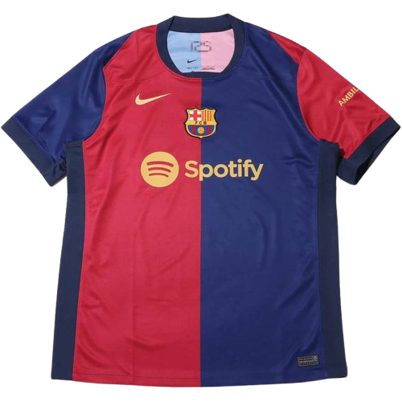
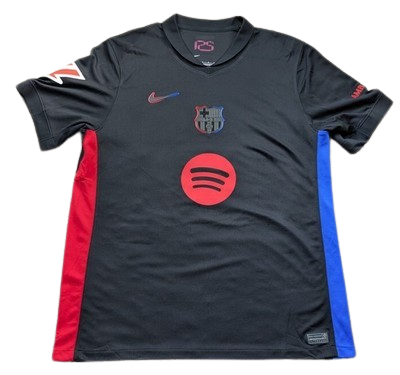
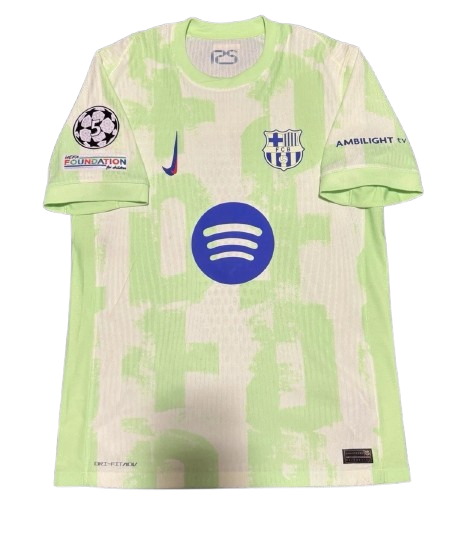

Home Kit

A bold split-color home kit that modernizes the classic blaugrana identity with a sharp, high-contrast look.
The 2024/25 season was a historic and revitalizing campaign for FC Barcelona under new manager Hansi Flick, marking a strong return to domestic dominance. Barcelona continued playing their home matches at the Estadi Olímpic Lluís Companys while the iconic Camp Nou remained under renovation as part of the Espai Barça project. Flick’s high-pressing system helped Barcelona capture a remarkable domestic treble, winning La Liga, the Copa del Rey, and the Supercopa de España, restoring the club’s supremacy in Spanish football. The season also saw the reemergence of Raphinha, who became one of the team’s most decisive attackers with important goals and assists throughout the campaign. Young stars such as Lamine Yamal, Pedri, and Gavi continued to grow as key figures alongside experienced striker Robert Lewandowski. In Europe, Barcelona showed major progress in the UEFA Champions League, reaching the semi-finals for the first time in several years and signaling the club’s reemergence as a serious contender on the continental stage. The season ultimately represented a powerful blend of youth, tactical evolution, and renewed confidence as Barcelona began a new successful era under Flick.

A bold split-color home kit that modernizes the classic blaugrana identity with a sharp, high-contrast look.

A dark away kit with vivid side accents and a glowing Spotify crest, giving Barcelona a sleek and aggressive style.

A light green third kit with abstract patterning, creating one of the season’s freshest and most experimental looks.